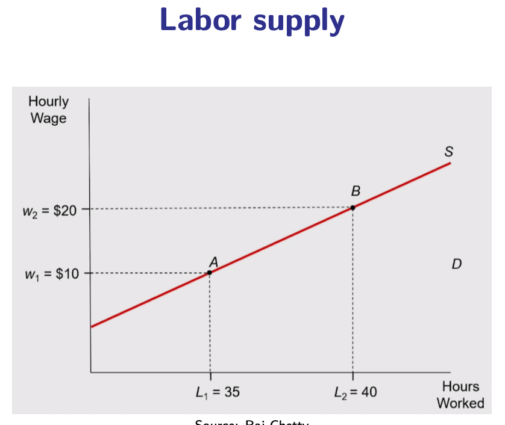
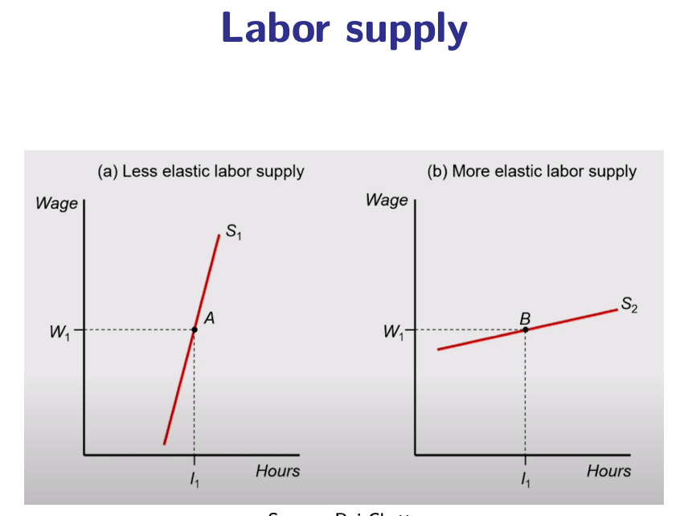
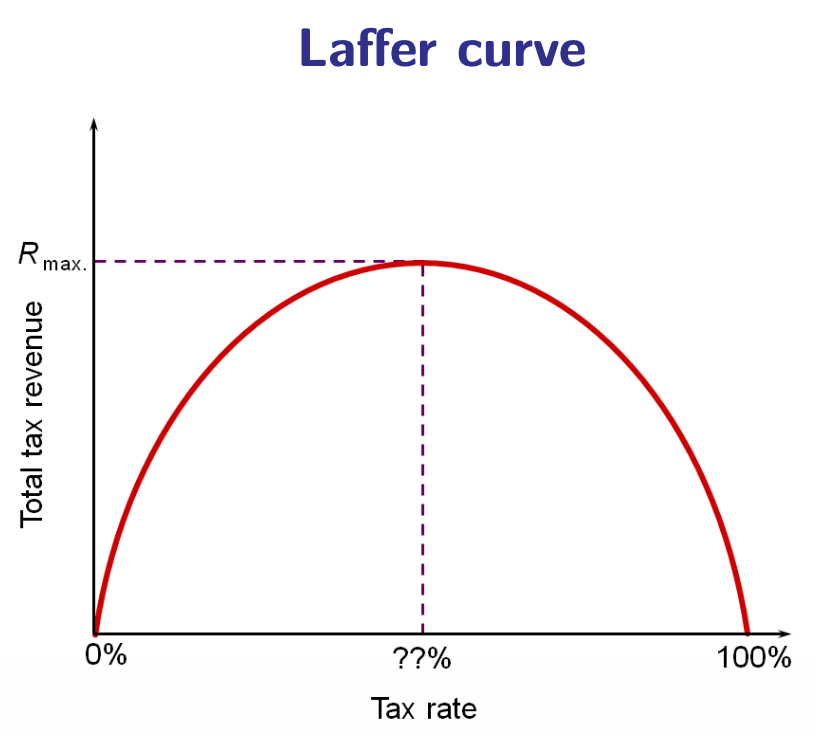

10.3 — Taxing Income: Labor Supply, Mirrlees & Saez
Chapter 10: Optimal Taxation & Personal Income Tax — The Income Tax Schedule
Why Income Taxation Is Complicated: The Information Problem
The ideal tax would target something that is exogenous (not affected by behavior), easily observable (impossible to hide), and positively correlated with ability (so it achieves redistribution). The ideal candidate — productivity — fails on all three counts.
✅ Lump-Sum Tax on Productivity
In an ideal world, the government would observe each person's productivity (wage rate, ability) directly, and tax it with a lump-sum tax — a fixed amount that does not depend on hours worked. This would have zero behavioral distortion: you cannot change your productivity level, so the tax cannot distort your choices.
❌ We Only Observe Income
Governments cannot observe productivity directly. They only observe income = productivity × time. The time dimension (effort, hours worked) is chosen by the individual in response to incentives. When we tax income, we tax the product of something fixed (productivity) and something flexible (time), so the tax inevitably distorts behavior.
Four Margins of Labor Supply Response
To quantify the behavioral cost of income taxation, we need to understand how people's labor supply responds to changes in the after-tax wage. There are four distinct margins along which people can respond:
⏱️ Intensive Margin (Hours)
Conditional on being employed, how many hours do you work? If taxes increase, employed workers may reduce overtime, take more vacation, or work fewer shifts. This is the most commonly studied margin.
Empirically: Relatively modest response for prime-age workers. Stronger for secondary earners in dual-income households.
🚪 Extensive Margin (Participation)
Do you work at all? High taxes (or high benefit withdrawal rates) can push people out of the labor market entirely — especially individuals at the margin of working (mothers returning from maternity leave, low-skill workers near the minimum wage, early retirees).
Empirically: Often larger than hours elasticity, especially at the bottom of the income distribution.
⚖️ Steady-State Work vs. Leisure
Over the long run, how does the permanent after-tax wage affect individuals' career choices — how much education to acquire, which profession to enter, how ambitious to be? High incomeome taxes on top earners may reduce the incentive to invest in high-productivity careers.
Empirically: Hard to measure separately; captured in long-run elasticity estimates.
🔄 Intertemporal Substitution
If taxes are temporarily high today and lower tomorrow, workers may reduce effort now (shift work to the future) and vice versa. This matters for temporary tax cuts/hikes and for retirement timing decisions.
Empirically: Relevant for top earners and entrepreneurs who have timing flexibility over income recognition.

Basic Labor Supply: When the wage rises from $w_1$ to $w_2$, hours worked increase from $L_1$ to $L_2$ (A → B). The substitution effect dominates at this range — higher wages make work more attractive relative to leisure. Note: at very high wages, the income effect may dominate and bend the curve backward.

Elasticity Matters: Left (steep) = inelastic supply — hours barely respond to wage changes (e.g. full-time workers with fixed contracts). Right (flat) = elastic supply — hours respond strongly (e.g. secondary earners, freelancers, students). Taxes cause larger distortions when supply is elastic.
The Laffer Curve: Revenue vs. Rate

The Laffer curve shows the relationship between the tax rate and total tax revenue collected. It captures the tension between two opposite forces:
📈 Mechanical Effect (Revenue ↑)
All else equal, a higher tax rate means the government takes a larger share of each dollar of income earned. Revenue increases mechanically with the rate, assuming behavior does not change.
📉 Behavioral Effect (Revenue ↓)
But as rates rise, individuals work less, evade more, and shift income to untaxed forms. The tax base shrinks. At sufficiently high rates, this behavioral effect dominates and revenue actually falls despite the higher rate.
- At $t = 0\%$: No revenue (trivially).
- At $t = 100\%$: No one works (all income is taken) → no revenue.
- Therefore, revenue is maximized at some intermediate rate $t^*$ (the peak of the curve).
- The revenue-maximizing rate is NOT necessarily the socially optimal rate. A government that also cares about equity and worker welfare may choose a rate below or even above $t^*$ depending on its social welfare function.
For the exam: The Laffer curve is a logical result, not an empirical claim about where most countries are. The political debate ("we are on the wrong side of the Laffer curve") requires evidence that the behavioral effect dominates. For most countries, the empirical evidence suggests we are on the left (upward-sloping) side — raising top rates still raises revenue. The Saez (2001) optimal rate formula formalizes this.
Mirrlees (1971): The First Rigorous Model
James Mirrlees (1971) — Nobel Prize 1996 — provided the first rigorous mathematical model of optimal income taxation, fully accounting for the equity–efficiency trade-off in the labor market.
The key methodological innovation of Mirrlees was to recognize that the schedule of marginal tax rates is the main policy lever. Consider what happens when we raise the marginal tax rate at a specific income level $Y_0$:
💸 Efficiency Cost
Raising the marginal rate at $Y_0$ discourages effort for all individuals whose income is close to $Y_0$ — they earn exactly that amount and now face a higher tax on each additional euro. This is a distortion of the intensive margin.
💰 Revenue Gain (Infra-marginal)
For individuals who earn $Y > Y_0$ (they are already above the threshold), raising the marginal rate at $Y_0$ increases their average tax rate but does not change their marginal rate. Their incentive to exert effort at the margin is unaffected. The government collects extra revenue from them at no behavioral cost.
- Marginal rates should be positive throughout — a zero marginal rate at any point would mean leaving revenue on the table without behavioral benefit for the people above.
- Transfers to the poor are efficient — the Earned Income Tax Credit (EITC) logic: subsidizing low earners through a negative income tax can increase labor force participation (extensive margin) while improving equity.
- The top marginal rate: Mirrlees's numerical simulations actually gave surprisingly moderate optimal top rates (around 50–70%), shocking the profession at the time.
Saez (2001): Elasticities & Optimal Top Rates
Emmanuel Saez (2001) took Mirrlees's complex mathematical model and derived a much simpler, transparent formula using elasticities. The key contribution is to express the optimal top marginal tax rate in terms of three observable inputs.
The revenue-maximizing (and approximately welfare-maximizing under certain SWFs) top marginal rate $t^*$ is:
$t^* = \frac{1}{1 + a \cdot \varepsilon}$
where:
- $\varepsilon$ = elasticity of taxable income with respect to the net-of-tax rate (measures behavioral response)
- $a$ = the Pareto parameter of the income distribution at the top (measures the thickness of the tail — how many very high earners there are)
Using realistic calibrations with US data, Saez found optimal top marginal rates between 50% and 80% — substantially higher than current US rates (~37%) and most EU rates.
📉 Elasticity (ε)
The lower the elasticity of taxable income (less behavioral response), the higher the optimal rate. If high earners cannot easily avoid the tax (no evasion, no emigration), you can tax them heavily.
📊 Income Distribution
Greater inequality (heavier right tail) increases the optimal rate. When there are many very high earners, there is more revenue to be gained and more redistribution to be done.
⚖️ Social Welfare Function
A stronger preference for equity (more Rawlsian SWF, or caring about a large low-income group) pushes the optimal rate up. Utilitarian planners may accept lower rates if redistribution has large efficiency costs.
Using Czech-specific data and carefully selected input parameters (elasticity estimates, income distribution, and a mixed SWF), Dušek and Šatava (2015) estimated that the optimal marginal tax rate for the highest incomes in Czechia ranges between 33–43%. This is notably lower than Saez's US estimates, reflecting:
- Smaller inequality in Czechia (thinner high-income tail → lower optimal rate)
- Higher estimated behavioral elasticities for Czech top earners (easier to evade or shift incomes)
- Different calibration of the SWF
The study also separately estimates optimal rates for employees vs. entrepreneurs, finding significantly lower optimal rates for self-employed individuals — reflecting their much higher ability to reclassify income and evade taxation.
Chapter 10.3 — The Big Picture:
- Information problem: Gov't observes income (= productivity × effort), not productivity alone. Taxing income always distorts effort — unlike a lump-sum tax on productivity.
- Four margins of labor supply: Intensive (hours), Extensive (participation), Steady-state (career), Intertemporal (timing). Behavior depends on marginal rate, not average rate.
- Empirical elasticity ≈ 0.2. Larger for part-timers, secondary earners; larger for big reforms; income-type substitution is a key evasion margin.
- Laffer curve: Revenue = 0 at t=0% and t=100%. Peak at $t^*$. Revenue-maximizing rate ≠ socially optimal rate.
- Mirrlees (1971): Marginal rate hike at $Y_0$ → distorts only people at $Y_0$, but is non-distortionary lump sum for people above $Y_0$. Marginal rates positive everywhere; transfers efficient (EITC logic).
- Saez (2001): $t^* = 1/(1+a\varepsilon)$. Optimal top rate 50–80% (US data). Higher with: low elasticity, high inequality, more Rawlsian SWF.
- Dušek & Šatava (2015): Optimal top rate 33–43% for Czechia. Lower than US estimates: less inequality + higher behavioral elasticities.